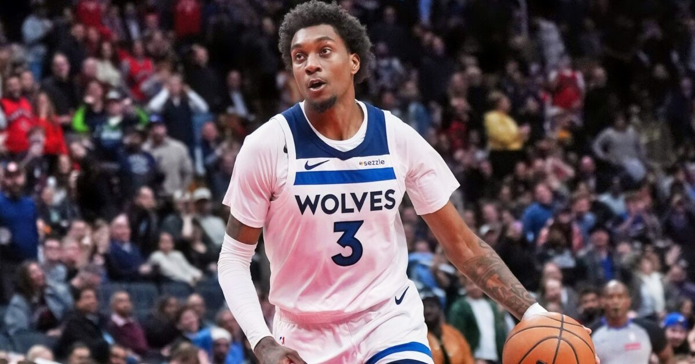

TSL Bets: Jaden McDaniels OVER 18.5 points vs. Grizzlies (-135)
Jaden McDaniels is averaging 26 points over his last five games — including 32 at Oklahoma City on Wednesday — and he faces a banged-up Memphis frontcourt with Anthony Edwards still out. The play: McDaniels OVER 18.5 points (-135, Odds Index) in the NBA Cup group decider.

The game slip
Memphis Grizzlies (14-5) at Minnesota Timberwolves (14-5)
Friday, 8:30 PM ET — Target Center, Minneapolis, MN (DAZN)
• Spread: Timberwolves -3.5 (-110)
• Total: 221.5 (Over -110 / Under -110)
• Moneyline: Timberwolves -160 / Grizzlies +135
• Odds source: BetMGM via USA Today Sportsbook Wire, November 26
Injury report — Grizzlies: F Jerami Grant OUT (calf). F GG Jackson OUT (foot). G Scotty Pippen Jr. OUT (back). F Cameron Boozer OUT (ankle). C Zach Edey QUESTIONABLE (ankle — played only nine minutes Wednesday). C Isaiah Stewart QUESTIONABLE (hip).
Injury report — Timberwolves: G Anthony Edwards OUT (knee — arthroscopic surgery October 29). G Donte DiVincenzo OUT (Achilles). G Jaylen Clark OUT (hamstring). G LaMelo Ball QUESTIONABLE (ankle).
Storylines: This one decides West Group B of the Emirates NBA Cup, and both teams arrive at 14-5 and 8-2 in their last 10. McDaniels is the engine of this Minnesota team right now: with Edwards out, he is the Timberwolves' leading scorer at 19.2 points a game, and he has taken it up another level lately — 26.0 points a game over his last five, with his minutes up to 36.4 a night. He went for 32 points, 10 rebounds and 5 assists on 11-of-15 shooting at Oklahoma City on Wednesday, and he scored 25 against this same Memphis team in Minnesota's 104-95 win on November 21. The Grizzlies are missing three rotation forwards and have both of their centers questionable, and Memphis is still dangerous — 9-1 on the road this season — but the frontcourt is thin against Rudy Gobert and a red-hot McDaniels.
The bet
Jaden McDaniels OVER 18.5 points (-135, Odds Index)
Why this prop
The trend and the role point the same way. McDaniels is scoring 26.0 a game over his last five against a 19.2 season average, his minutes have climbed from 34.1 to 36.4, and he has already put 25 on this opponent in the first meeting — on 64.7% shooting. With Edwards, DiVincenzo and Clark all out, the offense runs through him more than it ever has, and Minnesota is 11-4 since Edwards' knee procedure. The line sits a full 7.5 points under his last-five average. Odds Index rates this one a lean, but the form is doing the talking: the Wolves' leading scorer, at home, in a group-deciding game, against a frontcourt held together with tape.
The honest caveats
The season average is the counterweight — 19.2 points a game is only just above this line, so this is a bet on recent form holding, not on a season-long pattern. Memphis is 9-1 on the road for a reason, and the Grizzlies' defense travels. And LaMelo Ball is questionable: if he plays and handles the ball more, some of McDaniels' usage comes back down. The edge is real, but it is an edge, not a lock.
The record
TSL Bets is 23-45 in November, 27-66 all-time.
If you or someone you know has a gambling problem, call 1-800-GAMBLER.
Sources
• Best NBA Player Props Today: Prop Bet Predictions Tonight — November 27, 2026 (Odds Index)
• Memphis Grizzlies at Minnesota Timberwolves odds, picks and predictions (USA Today Sportsbook Wire)
• Grizzlies vs. Timberwolves Injury Report – Nov. 27 (KXNO / iHeart)
• Timberwolves vs Grizzlies Prediction & Odds: Nov. 27 (SportsHub)
• Grizzlies vs Timberwolves Player Props (darimarket)
• Timberwolves Face Grizzlies In Friday NBA Cup Decider (Yardbarker)
• McDaniels' 26.0 points over his last five, 32-point night at Oklahoma City, and 25 points in the November 21 meeting come from the Odds Index prop card and SportsHub, November 27.